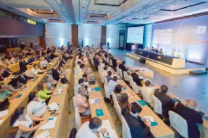

Indústria Eólica Nacional
A participação nacional e local na fabricação e desenvolvimento tecnológico dos aerogeradores e demais equipamentos (conversores, analisadores, torres e transformadores, entre outros) necessários à geração de energia a partir de fonte eólica têm sido um desafio valoroso que empresas e governos procuram enfrentar com racionalidade. Como no setor de petróleo e outros, o chamado “conteúdo local” é o que de fato implica na geração de emprego e renda para o País, em adição à geração de energia. A partir da iniciativa pioneira da Wobben/Enercon – inicialmente no Ceará, e depois também em São Paulo e Rio Grande do Norte - e da IMPSA (Pernambuco), outros fabricantes de aerogeradores vieram se instalar no país ao longo dos últimos anos: GE – São Paulo e Bahia; Fürhlander – Ceará; Suzlon – Ceará; Alstom – Bahia; Vestas – Ceará; Gamesa – Bahia; Weg – Santa Catarina. Juntas, estas nove empresas terão capacidade para produzir equipamentos capazes de gerar 4,4 GW quando atingirem a sua plena capacidade, em 2013. Ainda há outras empresas de fabricantes interessados no País, tais como Siemens, Guodian, Sinovel, Gold Wind e Acciona. Medidas de estímulo ao conteúdo nacional têm começado a surgir, a partir da existência de uma massa crítica de encomendas potenciais gerada pela série de leilões federais envolvendo eólicas, desde 2009. Por exemplo, para acessar o financiamento do Banco Nacional de Desenvolvimento Econômico e Social (BNDES) com juros atraentes, os empreendedores do setor eólico precisam assegurar a aquisição de no mínimo 60% em equipamentos, peças e acessórios fabricados no Brasil. Somente esta medida espera estimular a geração de até 12 mil empregos diretos. Também vem sendo detectada pelo setor a necessidade de capacitação de recursos humanos, de infraestrutura laboratorial, bem como de alavancar a pesquisa na cadeia de energia eólica em todas as suas dimensões e tecnologias. Já existe um esforço de pesquisa, desenvolvimento e inovação em universidades e centros de pesquisa, com foco em peças e componentes para grandes aerogeradores, em aerogeradores de pequeno e médio porte, em eventos extremos (no sul do país), em previsão de ventos, entre outras áreas. Uma das principais iniciativas neste sentido é o Centro de Tecnologias em Gás Natural e Energias Renováveis (CTGAS-ER), principal centro de excelência nacional dedicado às energias renováveis, sediado em Natal-RN.

Fórum Nacional Eólico | Carta dos Ventos
{kind=link}
O Fórum Nacional Eólico é uma iniciativa do CERNE que se propõe a discutir seu desenvolvimento do ponto de vista eminentemente político e regulatório. O foco é a discussão de política setorial por excelência. Na sua edição inaugural, o Fórum propôs a elaboração e assinatura de um documento que serviu de referência para as várias instâncias políticas do País, quanto ao setor eólico: a Carta dos Ventos, assinada em 2009. O FNE conta anualmente com a participação do Governo Federal, através dos Ministérios de Minas e Energia e do Meio Ambiente, da Câmara dos Deputados e do Senado Federal (signatários da Carta dos Ventos), e também do Fórum Nacional de Secretários de Energia (que representa, setorialmente, o âmbito dos governos estaduais). Além disso, conta com o apoio da Abeeólica e de mais 8 entidades associativas do setor energético nacional. A importância do FNE se reflete na oportunidade, por vezes única por ano, de que o setor se faça ouvir e entender pela classe política nas suas instâncias federal, estaduais e municipais.